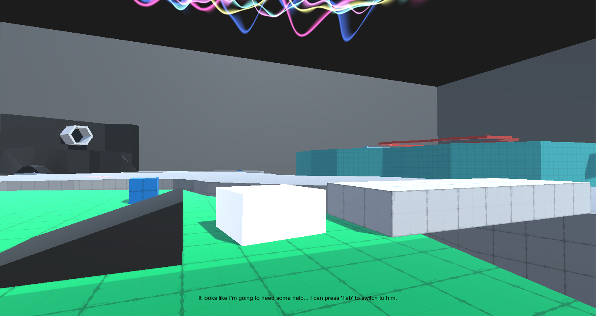
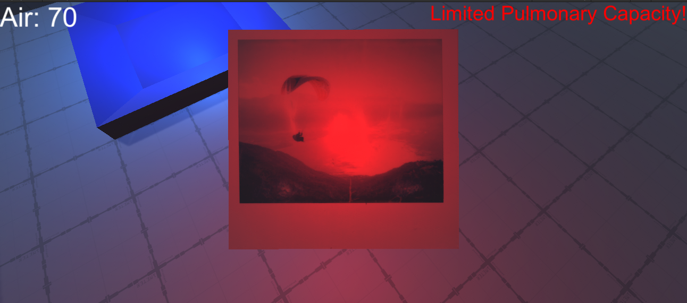
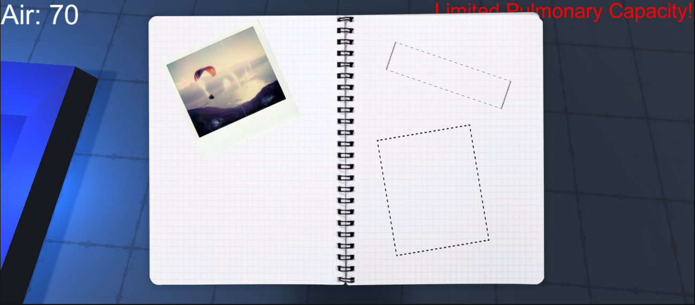
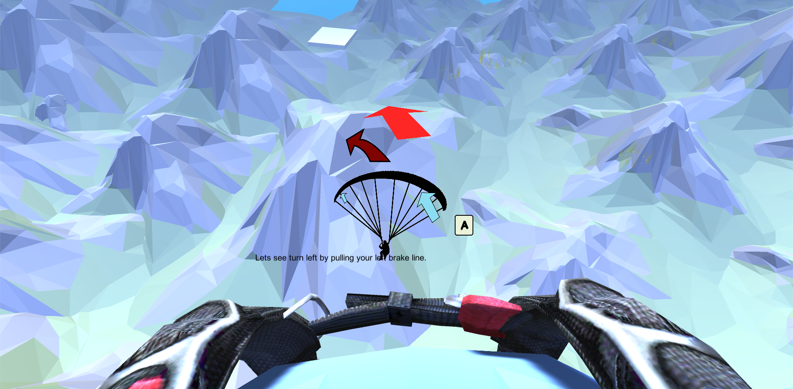
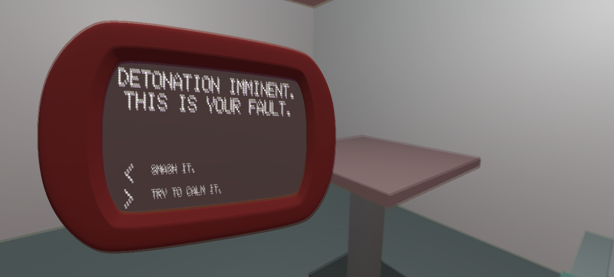
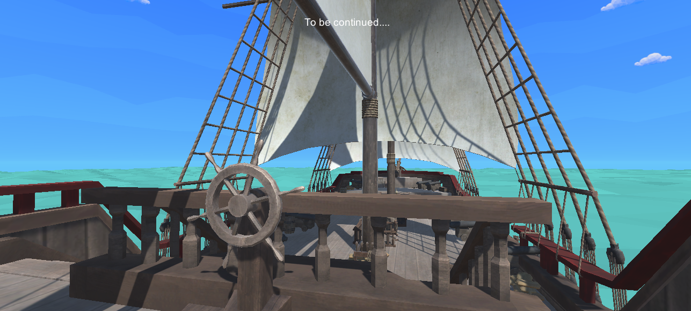

Third Playable
In the previous week, we sent out a form for players to fill out after going through our second playable demo. We had three Likert scale questions on a scale of 1-5:
1. How easy was it for you to know what to do? (Average: 2.625)
2. How difficult was the overall challenge? (Average: 4.125)
3. Did the sound design enhance the atmosphere? (Average: 4.625)
People felt as though the game was very difficult on average, which was somewhat surprising to us. This is not the experience we intended to create, and through observing playtesters it became clear that the kinds of challenges players were facing were not satisfying ones. Typically, players would be battling with the physics system or simply be confused about where to go. Improved tutorialization and the tweaking of physics are two things we know we need to focus on.
We also had two open response questions, asking for suggestions on how best to deliver the narrative and what peoples' personal favorite parts of the game were. People responded positively to the maze level, stating that the puzzle was interesting and mechanically sound, however the metaphor about "recovery" in this level was the weakest. Players also liked the sports theming of the see-saw level still had difficulties with some interpreting some of the signage within the arena.
Users had a variety of suggestions on how to deliver the dialogue, from voice acting, text bubbles, dialogue prompts and environmental storytelling. We have implemented a few of these techniques for this week's playable and we are looking forward to the feedback.
During the new development cycle, began to address some of the difficulties people had with the "support level", the level in which the player switches between two characters to complete the puzzle. This involved a lot of trial and error, adjusting the masses of the objects and modifying some other properties to make them easier to hold and stand on. For example the moveable ramp was very difficult for users to orient correctly, so this was changed to a movable block that the player would use to connect a static ramp with a bridge.
We also included collectibles in the form of hidden notes that can be found throughout the environment (although these collectibles aren't particularly hidden at the moment!) This allows the player to piece together some of the story elements while encouraging exploration at the same time. We aim to follow a "show don't tell" philosophy with these collectibles. The player can view the journal at any time through the menu.
 In previous weeks, players had wondered where some of the scenes and puzzles went from our previous prototypes. We brought back the paragliding scene which enhanced gameplay and a better cutscene that demonstrates the collision with another pilot.
We also implemented the conversation with the clock that was present in the early post-Twine text-based prototype. We are thrilled with the result of this; it is great to see some of the narrative components of our early prototype brought into the Unity version.
We have also begun to flesh out the final scene on the pirate ship. Eventually, this ship will deliver the player across the ocean for a full recovery, or sink into the ocean. The overall framework for the story is present from beginning to end in this version of the game.
